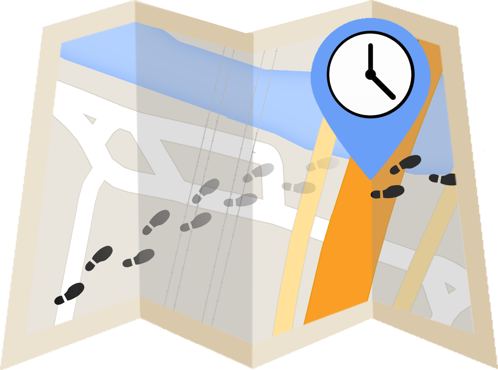

Options
AAMaps Prototype
 About
Clear Map
Pin Events
About
Clear Map
Pin Events
AA-Maps
Loading events...
Welcome to AA-Maps Prototype!
In the left panel, you have the AA-Maps technique components that you must choose in order to see the events on the map.
In the bottom, you have the time slider to adjust the time range for you analysis.
Enjoy you ride!
AA-Maps Prototype Version 1.0
Author: Catarina Albino, Nº 42181
This prototype is being developed in the context of my Msc. Thesis and it was used in IPM course as well.
In what concerns the interface, this version is a preliminary approach because the focus on my work is the development of AA-Maps visualization technique. So the interface is going to be further developed and more functionalities will be added in time.